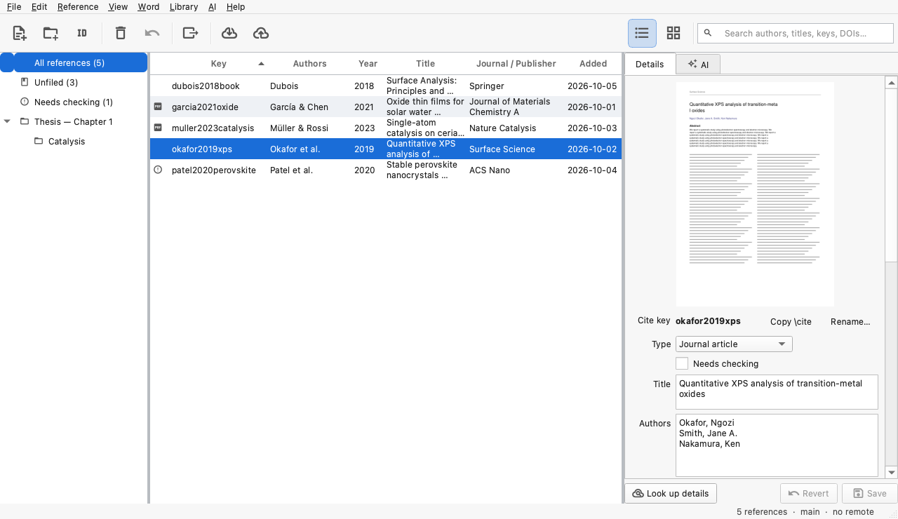
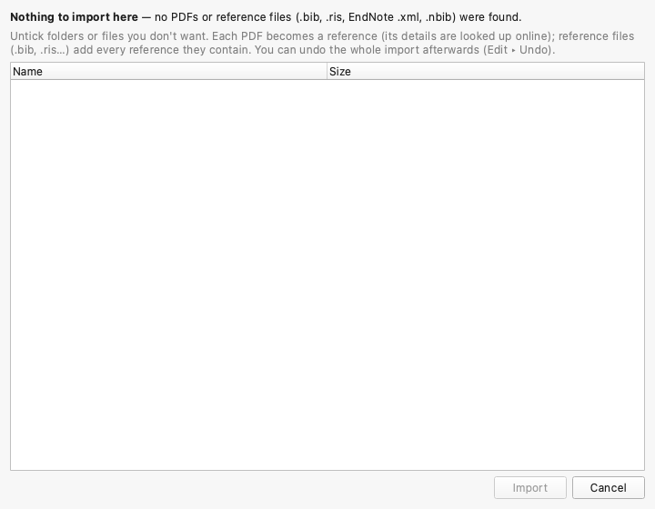
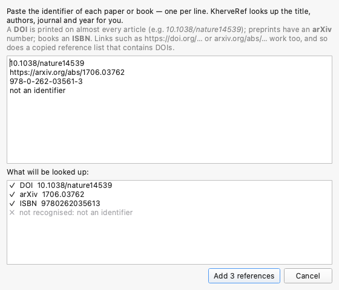
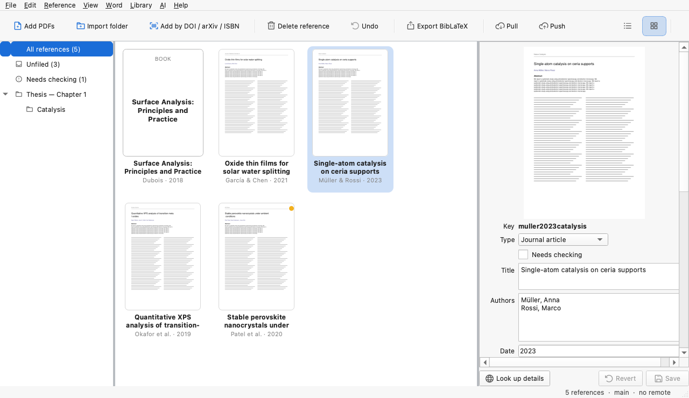

KherveRef User Guide
KherveRef keeps your papers and books in one library, finds their details for you, and puts citations into KherveTeX, Microsoft Word and LaTeX — with every change kept in your library's history.

Getting started
- Create a library. , give it a name (for example Thesis references) and choose where it goes. KherveRef creates a folder of that name.
- Add papers. Drag PDFs or a whole folder of PDFs onto the window. KherveRef reads each PDF, finds its DOI or arXiv number and fetches the title, authors, journal and year.
- Cite. Drag references into Word or KherveTeX, use the KherveRef panel in Word, or
export a
.bibfile.
Next time, KherveRef reopens the last library. To open another, use
(choose its .kref file) or
.
Your library folder
A library is an ordinary folder. Inside you only see three things:
KherveRef keeps its own data in a hidden .kherveref folder: one small file per
reference and your collections. You never need to open it. Libraries made by early versions of
KherveRef are tidied into this layout the first time they are opened.
Adding references
Drop PDFs and folders
Drag PDFs, folders, or reference files anywhere onto the window — or use and . For each PDF, KherveRef looks for a DOI, an arXiv number or an ISBN, then fetches the full details from doi.org/Crossref, arXiv or OpenLibrary. When the PDF has no identifier it searches Crossref by title and only accepts a near-exact match, so you never get the wrong paper's details.
Before a folder is imported, KherveRef shows everything it found — every subfolder and file — so you can untick what you don't want:

The same PDF, DOI, arXiv number or ISBN is never added twice. A PDF for a reference you already have is attached to it instead.
Add by DOI, arXiv number or ISBN
(CtrlShiftD).
Paste one identifier per line — links such as https://doi.org/… work, and so does a
copied reference list containing DOIs. The dialog shows, as you type, what it recognised:

Paste or type
(CtrlV) in the main window adds whatever is on the clipboard: identifiers, BibTeX, RIS or PubMed text. creates one to fill in by hand; its citation key is chosen when you save it.
Importing other libraries
| From | How | What comes across |
|---|---|---|
| Zotero | Everything: references, PDFs, nested collections, tags, notes. Zotero is never changed and can stay open. | |
| EndNote | Export as XML (or RIS), then | References; PDFs from the EndNote library's .Data/PDF folder when the export sits next to it. |
| Mendeley, Papers, Web of Science, Scopus, journal websites | Export RIS (.ris) | References; PDFs when the export links to them. |
| JabRef, BibDesk, Citavi, Paperpile, LaTeX projects | BibTeX / BibLaTeX (.bib) | References; PDFs named in file fields. |
| PubMed | Save → PubMed format (.nbib) | References with PMID, MeSH keywords and DOI. |
| Anything else | CSL-JSON (.json), or a folder of PDFs | References; each PDF looked up online. |
Importing the same library again only adds what is new.
Needs checking
When a PDF has no identifier, no exact title match, or you are offline, the reference is still added — from what the PDF itself says — and listed under Needs checking in the left pane (a warning sign in the list, an amber dot in Covers). Open it, correct what is wrong, or add its DOI and press Look up details. retries them all, for example once you are back online.
Browsing & editing

- List and Covers. Switch with the two buttons at the top right, , or Ctrl1 / Ctrl2. In the list, hovering a title previews its front page.
- Search. The box at the top right searches authors, titles, keys, journals, DOIs, keywords and notes; every word must match.
- Details. The right pane edits the selected reference. Fields relevant to its type are shown; edits are saved with Save (CtrlS) or automatically when you select another reference. Click the front page to open the PDF.
- Open a PDF by double-clicking the reference. It opens in KhervePDF when installed, otherwise in your usual PDF viewer.
- Notes. Your own notes are never exported. collects the highlights and comments you made in the PDF.
- Citation keys look like
smith2020surface— the names LaTeX cites; see Using with LaTeX. They never change by themselves, because documents cite them.
Collections
Collections are folders for references; one reference can be in several. Create one with or by right-clicking the left pane (also for subcollections, renaming and deleting). Drag references onto a collection to file them; drop PDFs or folders onto a collection to import straight into it. Deleting a collection never deletes its references.
Undo, delete, history
- Delete a reference with the toolbar's Delete reference, the Delete key, or right-click ▸ Delete. Its PDF goes too.
- Undo / Redo (CtrlZ / CtrlShiftZ) reverse anything done in the window — a whole folder import, an edit, a delete, a collection change — PDFs included. Undo refuses (and says why) if the same references were changed meanwhile by Claude or a sync, so it never discards someone else's change.
- History. lists every change ever made to the library. Undo itself is recorded there, so nothing is ever lost.
Using with LaTeX
Citation keys: the short names LaTeX cites
Every reference gets a short name, its citation key, as soon as it is added — for example
bagarinao2023nanostructured. You see it in the Key column of the list and as
Cite key at the top of the details. In LaTeX you cite it as
\cite{bagarinao2023nanostructured}.
- Copy \cite next to the key (or CtrlShiftC for the bare key, for several references at once).
- Drag references into a LaTeX editor: it receives
\cite{key1,key2}. - Rename… next to the key gives one reference another name.
Choosing the style of the names
sets how new references are named:
| Style | Example |
|---|---|
| Author, year and first title word (default) | smith2020surface |
| Author and year | Smith2020, then Smith2020b… |
| Author and year, lower case | smith2020, then smith2020b… |
renames the existing references too (their PDFs follow), after showing you the changes. Documents that already cite the old names would need updating, so do it before you start writing — reverses it.
Getting the .bib file to LaTeX
One .bib per paper (recommended). Put a paper's references in a collection, then
right-click the collection ▸ Export as .bib for LaTeX… and save it next to your
.tex file, e.g. as refs.bib. (Selecting references and using
works too.) Then:
\documentclass{article}
\usepackage{natbib} % for \citep / \citet; optional
\begin{document}
Nanostructured electrodes \citep{bagarinao2023nanostructured} …
\bibliographystyle{plainnat} % or unsrtnat, abbrvnat, ieeetr, …
\bibliography{refs} % refs.bib, without “.bib”
\end{document}Run LaTeX, BibTeX, then LaTeX twice (most editors and Overleaf do this for you). On Overleaf,
upload refs.bib to the project.
The whole library. library.bib in the library folder always holds every
reference and updates itself. BibTeX can't read paths with spaces, though, so copy it next to your
.tex (or export) rather than pointing \bibliography{} at a folder such as
REF Library.
BibLaTeX + biber. If your document uses \usepackage{biblatex}, export with
and use \addbibresource{refs.bib} and
\printbibliography.
KherveTeX does all of this by itself — see KherveTeX.
Citing & exporting
Citation styles
Choose under : APA 7th, Harvard (Cite Them Right), Chicago author–date, Vancouver, IEEE, Nature, ACS and RSC. These are the official Citation Style Language styles, the same as Zotero and Mendeley use.
- (CtrlAltC) — e.g. (Smith et al., 2020), ready to paste into Word, Pages or an email.
- (CtrlAltR) — the reference-list entry, with italics.
- Drag references into a document: Word and other rich-text apps get the formatted citation; LaTeX editors get
\cite{key}.
BibTeX and other files
(CtrlE), and
export the selected references (when several are selected)
or everything shown. library.bib in the library folder is always up to date too.
Microsoft Word
The KherveRef panel (recommended)
A panel inside Word that searches your library, inserts live citations and keeps the bibliography up to date in any of KherveRef's styles.
- In KherveRef: .
On a Mac, macOS doesn't let apps write into Word's folder, so two Finder windows open: dragkherveref-manifest.xmlinto thewefwindow. This is needed once. - Quit and reopen Word. Click Cite on the Home tab (or ).
- Click in your text, pick one or more references in the panel (click to select, double-click to insert at once), then Insert citation.
- Where the reference list should go, click Insert bibliography.
- Change the style in the panel at any time; Refresh all renumbers and reformats every citation and the bibliography.
Word's own citation tool
sends your library to Word's
and . Word
reads the list when it starts. On a Mac, macOS keeps Word's folder closed to other apps, so KherveRef
keeps the list in Documents/KherveRef/Sources.xml: in Word use
and choose that file.
KherveTeX
In KherveTeX, lists the references of your KherveRef
libraries — KherveRef need not be running. The cited references are saved inside the
.ktex file, so the document still compiles on a computer without your library.
lists cited keys that no library knows.
KhervePDF
- PDFs open in KhervePDF when it is installed; points at another copy, and switches it off.
- In KhervePDF, adds the open PDF to your library, and selects its reference.
Syncing between computers
Your library is a Git repository, so it syncs through any Git host (GitHub, GitLab…).
- Create an empty private repository on GitHub.
- and paste its address, e.g.
https://github.com/you/my-references.git. - Push sends your changes; Pull brings changes from your other computers. Both are on the toolbar.
On the second computer, clone the repository (for example with GitHub Desktop) and open its
.kref file. Because each reference is its own file, edits to different references on two
computers merge cleanly.
AI: summaries & questions
KherveRef can read your papers with an AI model that runs on your own computer (through Ollama), so your papers are never sent anywhere.
Setting up (once)
walks you through it and shows what is already on your computer:
- Install Ollama — the free program that runs AI models on your computer. Download it
from ollama.com/download (Mac, Windows, Linux) and
open it once; afterwards it starts with the computer. On a Mac,
brew install ollamain Terminal works too. - Install a model — press Install next to one in the list (the download runs
in KherveRef with a progress bar; no Terminal needed), or
ollama pull qwen3.5:4bin Terminal. - Choose it — Use this picks the model KherveRef uses. The dialog suggests one for your computer's memory.
Which model?
Pick by your computer's memory (the set-up window suggests one with a ★ and greys out models too big for it). Bigger models write better but are slower.
| Memory | Model | Download | Best for |
|---|---|---|---|
| 8 GB | granite4:micro-h (IBM) | 1.9 GB | Fastest and lightest; plain, factual style. |
| llama3.2:3b (Meta) | 2.0 GB | Quick, good English. | |
| phi4-mini (Microsoft) | 2.5 GB | Strong reasoning and maths for its size. | |
| 16 GB | qwen3.5:4b (Alibaba) — recommended | 3.4 GB | The best all-rounder: structured summaries, answers with pages, many languages, long papers. |
| gemma3:4b (Google) | 3.3 GB | Natural, readable writing. | |
| 32 GB | qwen3.5:9b (Alibaba) | 6.6 GB | Noticeably better summaries and answers than 4B. |
| ministral-3:8b (Mistral AI) | 6.0 GB | Strong in French and other European languages. | |
| gemma3:12b (Google) | 8.1 GB | Very readable, careful long summaries. | |
| 48–64 GB+ | gpt-oss:20b (OpenAI) | 14 GB | Strongest reasoning, for hard questions across many papers; slower. |
| qwen3.5:27b (Alibaba) | 17 GB | The highest quality listed. |
A model installed from Terminal (ollama pull …) appears after Refresh list,
under Other installed models. Models made for another purpose (e.g. the xps-expert
models built for KherveFitting) aren't meant for reading papers.
The AI tab: one paper or several
Select a reference and open the AI tab next to Details:
- Summarise (, CtrlShiftS) — one sentence, then aim, methods, key findings, conclusions and limitations, with page numbers.
- Ask — type a question about the paper (“Which substrate temperature was used?”); the answer cites pages.
- Everything is kept. The summary and every question you have asked stay with the paper and are shown again whenever you select it — even after restarting, and on your other computers when you sync.
- Several papers: select several references (⌘/Ctrl-click). Summarise each summarises them one after another; a question is asked of each paper, which answers with pages, then an Overview compares them. Each paper keeps its own answer.
- Add to notes copies the newest answer into the paper's notes; Copy copies the text; Stop halts a long run — what was finished is kept.
A collection or the whole library: Ask the library
(CtrlShiftA) asks a question of the whole library, any collection, or the selected references:
- Quick — KherveRef finds the passages of the PDFs that best match the question and the AI answers from them, in about half a minute.
- Read every paper — every PDF in the scope is asked in turn (about 25 seconds each), then an overview is written. Slower, but nothing is missed; each paper's answer is also kept with that paper.
Sources appear as [citation key, p. N] — click one to open that reference. Earlier
questions are listed on the left; click one to read its answer again.
Claude (MCP)
For harder questions, lets Claude work with your library: search it, read papers, search their full text, add papers by DOI, arXiv number, ISBN, PDF or BibTeX, edit and file references, and export BibTeX. It works on the library folder directly, so KherveRef need not be open; an open window shows Claude's changes at once.
claude mcp add kherveref -- python -m kherveref.mcp_serverThe dialog gives the exact command for your installation, with a button to copy it, and the settings for Claude Desktop.
Keyboard shortcuts
On a Mac, use ⌘ for Ctrl, ⌥ for Alt and ⌫ for Delete; the guide opens with ⌘?.
| Action | Shortcut |
|---|---|
| Add PDFs | CtrlShiftP |
| Add by DOI / arXiv / ISBN | CtrlShiftD |
| New empty reference | CtrlN |
| Open library | CtrlO |
| Paste identifiers / BibTeX / RIS | CtrlV |
| Find | CtrlF |
| List / Covers view | Ctrl1 / Ctrl2 |
| Save the details | CtrlS |
| Undo / Redo | CtrlZ / CtrlShiftZ |
| Delete reference | Delete |
| Look up details | CtrlL |
| Copy citation key | CtrlShiftC |
| Copy formatted citation / reference | CtrlAltC / CtrlAltR |
| Export BibLaTeX | CtrlE |
| Summarise this paper (AI) | CtrlShiftS |
| Ask the library (AI) | CtrlShiftA |
| This guide | F1 |
Troubleshooting
A paper was added with the wrong or missing details
Find it under Needs checking, add its DOI in the details, and press Look up details. Scanned PDFs without a text layer can't be read: fill them in by hand.
The Word panel says “KherveRef isn't running”
Open KherveRef, then click try again in the panel. If it persists, reinstall the panel () and restart Word.
“Operation not permitted” on a Mac
macOS protects Word's own folders from other apps. Use the Finder step the installer offers; copies you make yourself in Finder are allowed.
Push or Pull fails
KherveRef uses your computer's Git and its sign-in. Check the remote address under
, and that you can push to that repository with
GitHub Desktop or git push.